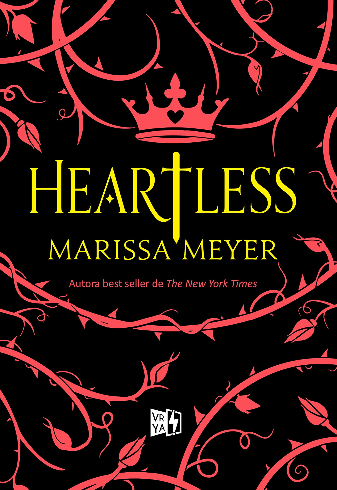
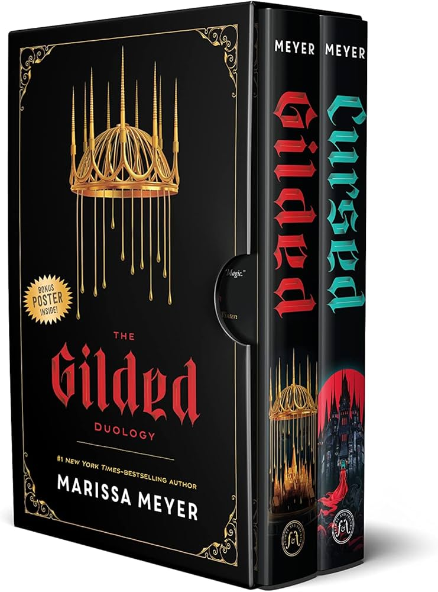
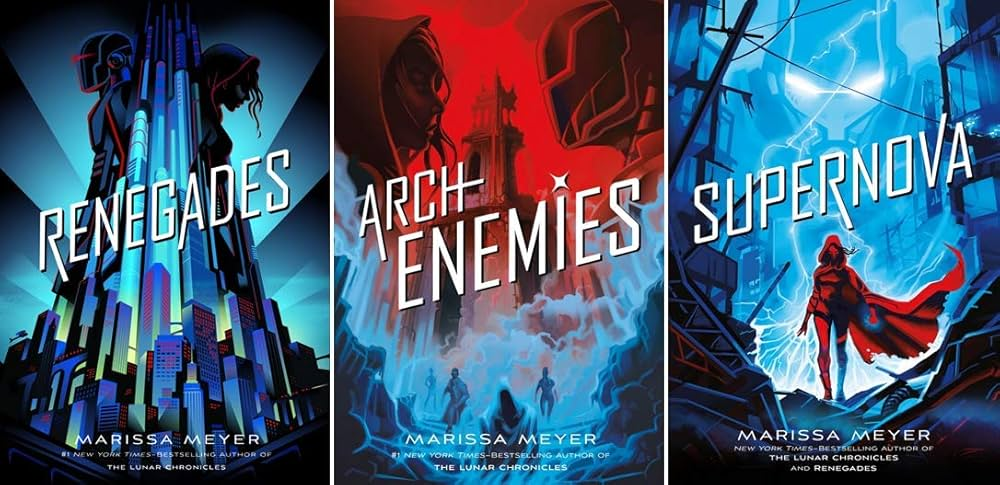

Es uno de mis libros favoritos porque empieza a contarte la historia diciéndote lo que va a pasar al final, y está tan bien escrito que te interesa saber como va a pasar eso, como personajes tan buenos pueden llegar a cometer actos atroces y cómo fue que se rompieron sus voluntades, me parece una historia hermosísima de una profecía autocumplida que muestra como el dolor puede cacmbiar a las personas y que pasa con alguien cuando pierde todo aquello que alguna vez le dio sentido y propósito a su existencia, como puede convertirse en aquello que juró odiar solo para obtener venganza y un poco de consuelo que nunca llegará porque ya ni siquiera tiene un corazón que pueda sentir satisfacción.

Este libro es mi segundo favorito de las colecciones de Meyer, me gusta como se construyen los personajes y como cuenta un ahistoria más oscura y alejada de los universos de fantasía, el segundo libro no es de mis favoritos pero me gustó que hubiera una conclusión para la historia, aunque en mi opinión hubiera sido mejor que la historia terminara de una forma más trágica para mostrar la oscuridad que tienen los retellings de cuentos de hadas.

Esta trilogía es mi colección de libros favorito de esta autora, me gusta mucho como construye el mundo y los distintos personajes que existen, como todos tienen motivaciones, deseos y miedos, me parece que tenía bastante potencial, sin embargo su final nuevamente me dejó con un sabor amargo, me pareció demasiado optimista para la distopía que es realmente ese mundo, me parece bien que se haga una autocrítica y se deje abierto el final, que se de a entender que las cosas no podrán estar bien por mucho, pero es triste que ya no supimos más de que pasó después de que "todo saliera bien".